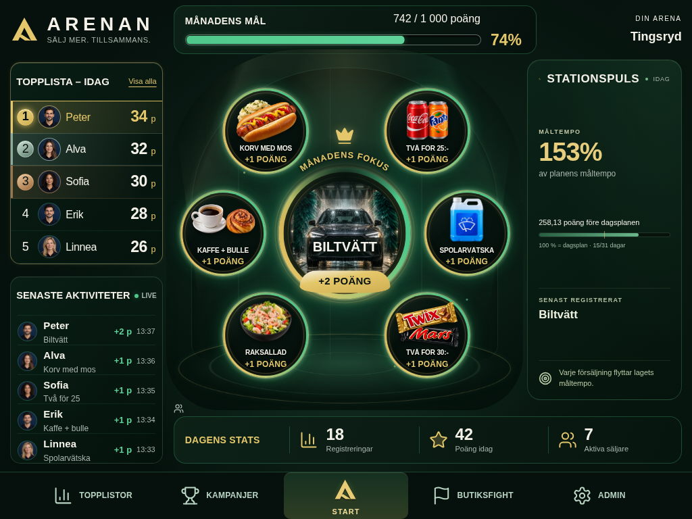
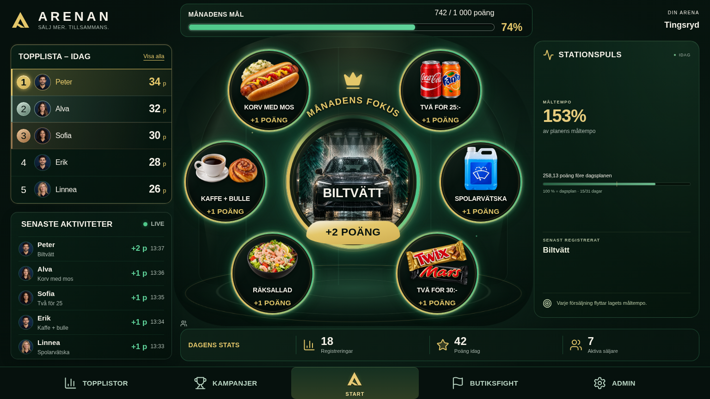
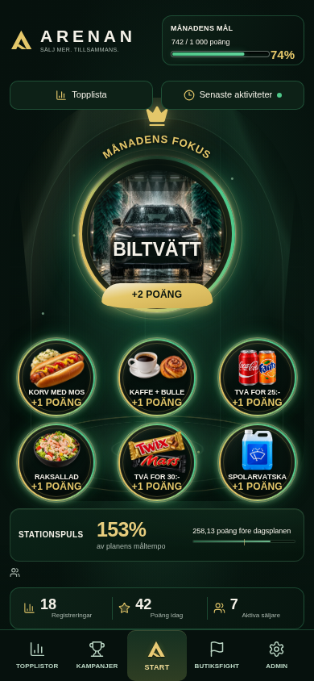
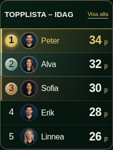
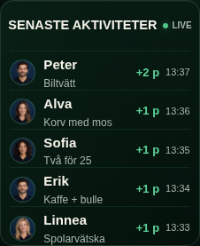

Sex kuraterade bilder från verklig React/CSS-rendering med syntetisk showcase-data. Enbart headers vid 951–1200 px ändrade; större desktop och mobil har oförändrad layout.





Slutrapport · Responsive QA · Geometriverifiering · Manifest